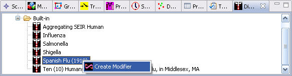
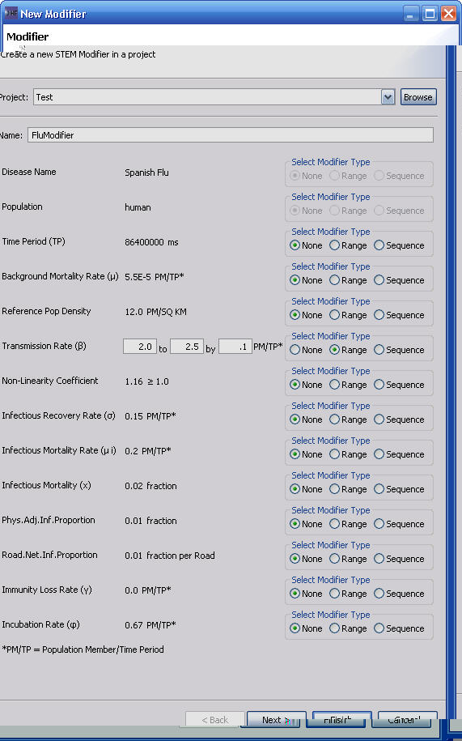
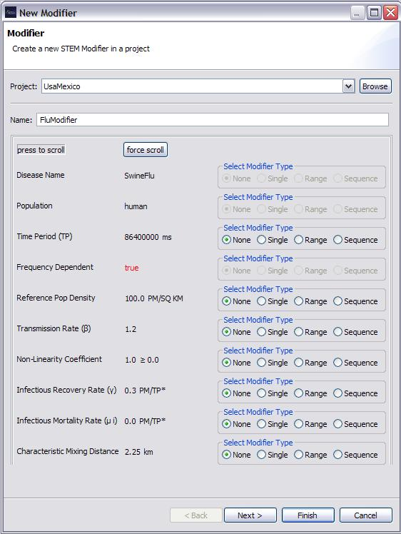
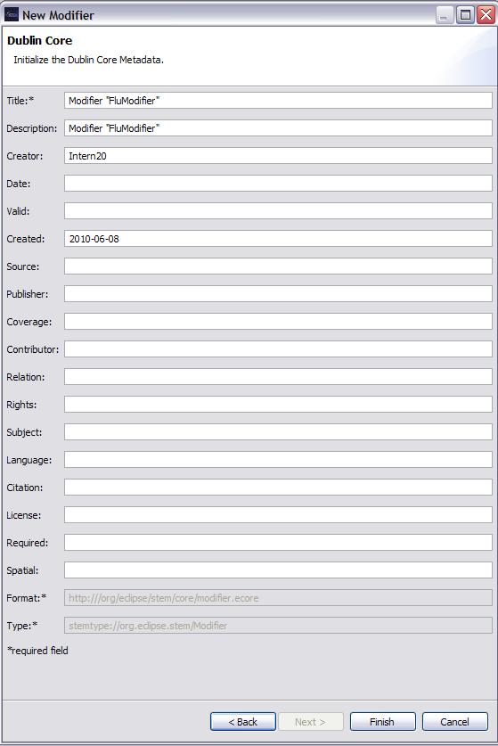
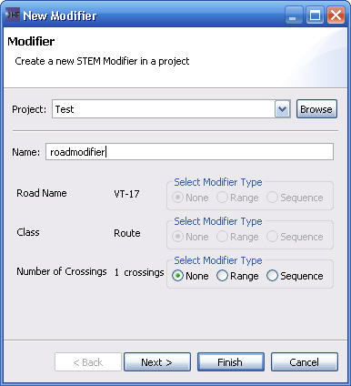

The New Modifier wizard is used to create and define the properties of a new Modifier. It is a bit different from the other wizards in that it is invoked from the context menu of selected STEM components that can be modified. In the image below, the built-in disease model for the Pandemic Demo is selected and the context menu displayed. 
The resulting wizard is in the next image. It shows the attributes of the disease model that can be modified. In the example, a Range Modifier for the Transmission Rate has been created that sets the initial value to 2.0 and then increments it by 0.1 until 2.5 (inclusive). In the example, the Disease Name and Population are grayed out, indicating that no modifier can be specified for those attributes.
The creation of Sequence Modifiers is not implemented yet.

Similiarly, creating a Modifier for an Edge Label and a Node label is illustrated below.
 
